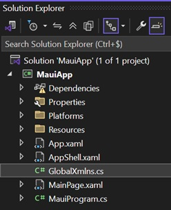

MAUI UI - XAML, Controls & Events
Tot nu toe werkten we met console-applicaties. Een grafische applicatie reageert anders op de gebruiker: de applicatie blijft actief en wacht op invoer via knoppen, tekstvelden, selectie en andere events.
In deze les bouwen we de eerste versie van een kleine grappenapp. We concentreren ons bewust op de gebruikersinterface en werken nog met code-behind.
Deze app groeit doorheen vijf opeenvolgende lessen: events en controls, layout en validatie, DI en opslag, MVVM en ten slotte details en messaging. We verbeteren telkens dezelfde app; we starten niet bij ieder onderwerp opnieuw. Iedere les eindigt met een thuisopdracht die op de lesversie verderbouwt. WebAPI vormt aan het einde een facultatieve preview op andere lessen, voor wanneer er tijd over is.
De MAUI-workload
Een workload breidt de .NET SDK en de ontwikkelomgeving uit met templates, build tools en platformondersteuning.
Open de Visual Studio Installer, kies Modify bij de gebruikte Visual Studio-installatie en activeer de workload .NET Multi-platform App UI development.
Tijdens de installatie bekijken we het doel van MAUI, de ondersteunde platformen en de structuur van een project. De duur van de installatie is afhankelijk van de computer en de onderdelen die al aanwezig zijn.
Een korte geschiedenis
Desktop- en mobiele platformen bieden elk hun eigen technologie om een gebruikersinterface te bouwen. Een Windows-app, Android-app en iOS-app gebruiken daardoor traditioneel verschillende projecten, programmeertalen en UI-frameworks.
Xamarin maakte het mogelijk om mobiele applicaties in C# te schrijven. Xamarin.Forms voegde daar een gedeelde, declaratieve gebruikersinterface aan toe. .NET MAUI is de opvolger van Xamarin.Forms en maakt deel uit van het moderne .NET-platform.
MAUI staat voor Multi-platform App UI. Het framework laat toe om vanuit één project toepassingen te bouwen voor onder meer:
-
Android;
-
iOS;
-
Windows;
-
macOS.
De meeste code en XAML worden gedeeld. Wanneer een platform werkelijk afwijkend gedrag nodig heeft, kan er nog steeds platformspecifieke code worden voorzien.
| Eén gedeeld project betekent niet dat elk platform er exact hetzelfde uitziet. MAUI gebruikt waar mogelijk de mogelijkheden en conventies van het doelplatform. |
Een eerste project
Maak een nieuw project met de template .NET MAUI App en noem het project JokeApp.

Een nieuw project bevat veel bestanden. We hoeven ze niet allemaal onmiddellijk te begrijpen.
Platforms-
Bevat code en configuratie die enkel voor een specifiek platform geldt. Het grootste deel van onze code komt hier niet terecht.
Resources-
Bevat afbeeldingen, fonts, kleuren, styles en andere bestanden die de app gebruikt.
App.xaml-
Bevat resources die voor de volledige applicatie beschikbaar zijn. De gekoppelde code-behind bevat de opstartlogica van de app.
AppShell.xaml-
Beschrijft de globale navigatiestructuur van een Shell-applicatie.
MainPage.xaml-
Beschrijft de inhoud van het eerste scherm.
MainPage.xaml.cs-
Is de code-behind van
MainPage.xaml. Hier reageren we voorlopig op UI-events. MauiProgram.cs-
Configureert en bouwt de applicatie. Later registreren we hier onze dependencies.
Start het project eerst ongewijzigd. Kies bovenaan Visual Studio een doelplatform en controleer of de standaardapp opent.
| Bouw en start regelmatig. Wanneer je tientallen wijzigingen tegelijk uitvoert, wordt het veel moeilijker om de oorzaak van een fout terug te vinden. |
Van console naar event-driven
Een consoleprogramma wordt vaak gelezen als een opeenvolging van instructies.
Console.Write("Geef een grap: ");
var text = Console.ReadLine();
Console.WriteLine(text);Een grafische applicatie moet intussen blijven tekenen, invoer verwerken en op het platform reageren. Onze eigen code wordt daarom meestal uitgevoerd wanneer er iets gebeurt:
-
de gebruiker klikt op een knop;
-
de tekst in een invoerveld verandert;
-
de gebruiker maakt een keuze;
-
een pagina verschijnt;
-
een timer loopt af.
Zo’n gebeurtenis noemen we een event. Een methode die als reactie wordt uitgevoerd, heet een event handler.
private void OnShowRandomJokeClicked(object? sender, EventArgs e)
{
// Wordt uitgevoerd nadat de gebruiker op de knop klikt.
}De applicatie roept deze methode aan. We schrijven dus niet zelf een lus die voortdurend controleert of de knop is ingedrukt.
XAML en code-behind
XAML is een declaratieve taal op basis van XML. We beschrijven welke objecten samen de gebruikersinterface vormen en welke properties ze krijgen.
<?xml version="1.0" encoding="utf-8" ?>
<ContentPage xmlns="http://schemas.microsoft.com/dotnet/2021/maui"
xmlns:x="http://schemas.microsoft.com/winfx/2009/xaml"
x:Class="JokeApp.MainPage">
<VerticalStackLayout Padding="24"
Spacing="16">
<Label Text="JokeApp"
FontSize="32"
FontAttributes="Bold" />
<Button Text="Toon een grap" />
</VerticalStackLayout>
</ContentPage>Ieder element stelt een object voor:
-
ContentPageis de pagina; -
VerticalStackLayoutrangschikt zijnchildrenverticaal; -
LabelenButtonzijn zichtbare controls; -
attributen zoals
Text,PaddingenFontSizestellen properties in.
De nesting vormt een boomstructuur. De pagina bevat een layout en de layout bevat twee controls.
De gekoppelde klasse
De waarde van x:Class verwijst naar de bijbehorende C#-klasse.
namespace JokeApp;
public partial class MainPage : ContentPage
{
public MainPage()
{
InitializeComponent();
}
}InitializeComponent() initialiseert de objecten uit de XAML, bouwt hun onderlinge relaties op en koppelt gedeclareerde event handlers. De klasse is partial omdat een deel vanuit de XAML wordt gegenereerd.
Verwijder InitializeComponent() niet. Zonder deze aanroep bestaan de controls uit de XAML nog niet wanneer de constructor verder wordt uitgevoerd.
|
Layouts
Een layout bepaalt waar en hoe zijn children worden geplaatst. Veelgebruikte layouts zijn:
VerticalStackLayout-
Plaatst controls onder elkaar.
HorizontalStackLayout-
Plaatst controls naast elkaar.
Grid-
Verdeelt ruimte in rijen en kolommen.
ScrollView-
Maakt een enkel child-element scrolbaar wanneer de inhoud niet op het scherm past.
Een layout is zelf ook een element en kan dus andere layouts bevatten.
<VerticalStackLayout Spacing="12">
<Label Text="Nieuwe grap" />
<HorizontalStackLayout Spacing="8">
<Entry Placeholder="Typ een grap"
HorizontalOptions="Fill" />
<Button Text="Toevoegen" />
</HorizontalStackLayout>
</VerticalStackLayout>Deze oplossing werkt op een breed scherm, maar op een smal toestel krijgt het invoerveld mogelijk te weinig plaats. In de volgende les gebruiken we een Grid om dergelijke schermen robuuster op te bouwen.
Veelgebruikte controls
Label-
Toont tekst.
Button-
Voert een actie uit wanneer de gebruiker erop klikt.
Entry-
Laat invoer op één regel toe.
Editor-
Laat invoer over meerdere regels toe.
Picker-
Laat de gebruiker één waarde uit een lijst kiezen.
Image-
Toont een afbeelding uit de resources of van een andere bron.
Border-
Groepeert inhoud in een visueel vlak met een achtergrond en rand.
Een volledig overzicht is beschikbaar in de documentatie van MAUI-controls. Probeer niet alle controls uit het hoofd te leren. Leer vooral documentatie lezen en de juiste control voor een interactie kiezen.
Events koppelen
We koppelen in XAML het Clicked-event van een knop aan een methode in de code-behind.
<Button Text="Toon een grap"
Clicked="OnShowRandomJokeClicked" />De code-behind bevat een methode met de verwachte signatuur.
private void OnShowRandomJokeClicked(object? sender, EventArgs e)
{
// Reactie op de klik.
}sender-
Verwijst naar het object dat het event verstuurde. In dit geval is dat de knop.
e-
Bevat bijkomende informatie over het event. Een gewone klik heeft geen extra gegevens nodig, waardoor het type
EventArgsvolstaat.
Events kunnen ook vanuit C# worden gekoppeld.
showRandomJokeButton.Clicked += OnShowRandomJokeClicked;In deze cursus gebruiken we voorlopig de declaratie in XAML. Zo blijft in én oogopslag zichtbaar op welk event een control reageert.
Controls aanspreken
Geef een control met x:Name een naam wanneer de code-behind hem rechtstreeks moet aanspreken.
<Label x:Name="currentJokeLabel"
Text="Klik op de knop voor een grap." />
<Button Text="Toon een grap"
Clicked="OnShowRandomJokeClicked" />Na InitializeComponent() is currentJokeLabel beschikbaar in de gekoppelde partial class.
private void OnShowRandomJokeClicked(object? sender, EventArgs e)
{
currentJokeLabel.Text = "Een byte bestelt acht bits.";
}Gebruik duidelijke namen. currentJokeLabel vertelt meer dan label1 en maakt event handlers gemakkelijker te lezen.
Het model
Een grap is een concept uit ons probleemdomein en verdient vanaf het begin een eigen klasse. We starten eenvoudig, maar vermijden bewust een overgang van losse string-waarden naar een model in een latere les.
namespace JokeApp.Models;
public sealed class Joke
{
public Guid Id { get; init; } = Guid.NewGuid();
public string Text { get; set; }
public Joke(string text)
{
Text = text;
}
}De validatieregels worden in de volgende les toegevoegd. Het belangrijke punt is nu dat de UI werkt met Joke-objecten en niet met een lijst losse teksten.
De grappen beheren
De pagina is verantwoordelijk voor interactie met de gebruiker. Het beheren en kiezen van grappen is een andere verantwoordelijkheid. We plaatsen die in een eenvoudige JokeService.
using JokeApp.Models;
namespace JokeApp.Services;
public sealed class JokeService
{
private readonly List<Joke> _jokes = new()
{
new Joke("Er zijn 10 soorten mensen: zij die binair begrijpen en zij die dat niet doen."),
new Joke("Een SQL-query loopt een café binnen, stapt naar twee tabellen en vraagt: mag ik erbij komen?")
};
public IReadOnlyList<Joke> GetAll()
{
return _jokes.AsReadOnly();
}
public Joke GetRandom()
{
var index = Random.Shared.Next(_jokes.Count);
return _jokes[index];
}
public void Add(Joke joke)
{
ArgumentNullException.ThrowIfNull(joke);
_jokes.Add(joke);
}
}De klasse is nog geen repository. Ze biedt wel een duidelijke plaats voor de verantwoordelijkheid en voorkomt dat de pagina zelf een List<Joke> beheert.
Een eerste werkend scherm
Vervang de standaardinhoud van MainPage.xaml door een compact scherm.
<?xml version="1.0" encoding="utf-8" ?>
<ContentPage xmlns="http://schemas.microsoft.com/dotnet/2021/maui"
xmlns:x="http://schemas.microsoft.com/winfx/2009/xaml"
x:Class="JokeApp.MainPage"
Title="JokeApp">
<ScrollView>
<VerticalStackLayout Padding="24"
Spacing="16">
<Label Text="JokeApp"
FontSize="32"
FontAttributes="Bold" />
<Border Padding="20"
StrokeThickness="1">
<Label x:Name="currentJokeLabel"
Text="Klik op de knop voor een grap."
FontSize="18" />
</Border>
<Button Text="Toon een willekeurige grap"
Clicked="OnShowRandomJokeClicked" />
<Label Text="Zelf een grap toevoegen"
FontAttributes="Bold" />
<Entry x:Name="jokeTextEntry"
Placeholder="Typ hier een grap"
TextChanged="OnJokeTextChanged"
Completed="OnJokeTextCompleted" />
<Button x:Name="addJokeButton"
Text="Toevoegen"
IsEnabled="False"
Clicked="OnAddJokeClicked" />
<Label x:Name="statusLabel"
Text="2 grappen beschikbaar" />
</VerticalStackLayout>
</ScrollView>
</ContentPage>De pagina heeft een JokeService nodig. We maken die voorlopig zelf aan.
using JokeApp.Models;
using JokeApp.Services;
namespace JokeApp;
public partial class MainPage : ContentPage
{
private readonly JokeService _jokeService = new();
public MainPage()
{
InitializeComponent();
UpdateStatus();
}
private void OnShowRandomJokeClicked(object? sender, EventArgs e)
{
var joke = _jokeService.GetRandom();
currentJokeLabel.Text = joke.Text;
}
private void OnJokeTextChanged(object? sender, TextChangedEventArgs e)
{
addJokeButton.IsEnabled = !string.IsNullOrWhiteSpace(e.NewTextValue);
}
private void OnJokeTextCompleted(object? sender, EventArgs e)
{
TryAddJoke();
}
private void OnAddJokeClicked(object? sender, EventArgs e)
{
TryAddJoke();
}
private void TryAddJoke()
{
var joke = new Joke(jokeTextEntry.Text);
_jokeService.Add(joke);
jokeTextEntry.Text = string.Empty;
currentJokeLabel.Text = joke.Text;
UpdateStatus();
}
private void UpdateStatus()
{
var count = _jokeService.GetAll().Count;
statusLabel.Text = $"{count} grappen beschikbaar";
}
}Merk op hoe verschillende events dezelfde private methode TryAddJoke() gebruiken. De knop en de Enter-toets bieden twee interacties, maar de logica staat slechts op één plaats.
TextChangedEventArgs bevat onder meer OldTextValue en NewTextValue. Het specifieke type van e hangt af van het event.
|
UI-toestand
Een scherm heeft op ieder moment een zichtbare toestand. In ons eenvoudige scherm zijn bijvoorbeeld deze vragen relevant:
-
Welke grap wordt momenteel getoond?
-
Wat staat in het invoerveld?
-
Kan de knop Toevoegen worden gebruikt?
-
Hoeveel grappen zijn beschikbaar?
Op dit moment passen event handlers de controls rechtstreeks aan. Dat is overzichtelijk voor een klein scherm. Naarmate het aantal controls en events groeit, wordt het moeilijker om die toestand consistent te houden. Dat probleem lossen we later met MVVM op.
| Code-behind is niet automatisch slechte code. Houd er voorlopig wel uitsluitend UI-interactie in en verplaats domeinlogica naar de passende domein- of serviceklasse. |
Thuisopdracht - Geef je JokeApp categorieën
Vertrek van de werkende app uit de les. Je hoeft de getoonde code niet opnieuw over te typen: breid ze zelfstandig uit zodat gebruikers grappen kunnen indelen. Deze opdracht is bedoeld als inoefening thuis. Als er lestijd overblijft, kan je al beginnen.
Behoud het tonen en toevoegen van grappen, de uitgeschakelde toevoegknop bij lege invoer en het bijgewerkte aantal grappen.
Must
-
Maak in
Models/JokeCategory.cseenJokeCategory-enum metProgramming,DadJokeenOther. -
Geef
Jokeeen propertyCategoryen pas de constructor aan zodat die tekst en categorie ontvangt. Pas ook de bestaande constructor-aanroepen aan. -
Laat de gebruiker via een
Pickereen categorie kiezen bij het toevoegen. Selecteer bij het openen van de pagina een standaardcategorie. -
Toon bij de willekeurige grap ook haar categorie. Bewaar die categorie in het
Joke-object, niet uitsluitend in een label. -
Voorzie minstens drie startgrappen, verspreid over de categorieën.
-
Voeg een knop Invoer wissen toe. Die wist het invoerveld en herstelt de standaardcategorie, zonder een grap toe te voegen.
Raadpleeg de documentatie van Picker. Vul ItemsSource in de constructor na InitializeComponent(). Met Enum.GetValues<JokeCategory>().ToList() krijg je de categorieën; met SelectedIndex stel je een beginselectie in en via SelectedItem lees je de keuze uit.
|
Should
-
Toon in een apart label welke categorie momenteel voor de nieuwe grap gekozen is. Werk dat label bij via
SelectedIndexChanged. -
Geef na toevoegen het invoerveld opnieuw focus met
Focus(), zodat de gebruiker meteen een volgende grap kan typen. -
Werk het categorielabel ook bij wanneer Invoer wissen de beginselectie herstelt.
Could
-
Houd bij hoe vaak een willekeurige grap werd opgevraagd.
-
Voeg een knop toe om de laatst opgevraagde willekeurige grap opnieuw te tonen nadat een nieuwe grap werd toegevoegd. Bewaar hiervoor een verwijzing naar het passende
Joke-object en schakel de knop uit zolang nog geen willekeurige grap werd opgevraagd.
Controleer je uitbreiding
-
Voeg een grap toe in elke categorie en controleer of tekst en categorie samen worden bewaard en getoond.
-
Kies een andere categorie en druk op Invoer wissen: het invoerveld is leeg, de standaardcategorie is opnieuw geselecteerd en het aantal grappen is niet veranderd.
-
Controleer of de bestaande knop voor een willekeurige grap en de teller nog werken.
| Bewaar deze versie. In de volgende les gebruiken we dezelfde categorieën in een lijst en verplaatsen we het invoerformulier naar een eigen pagina. DI, MVVM en modelvalidatie zijn voor deze opdracht nog niet nodig. |